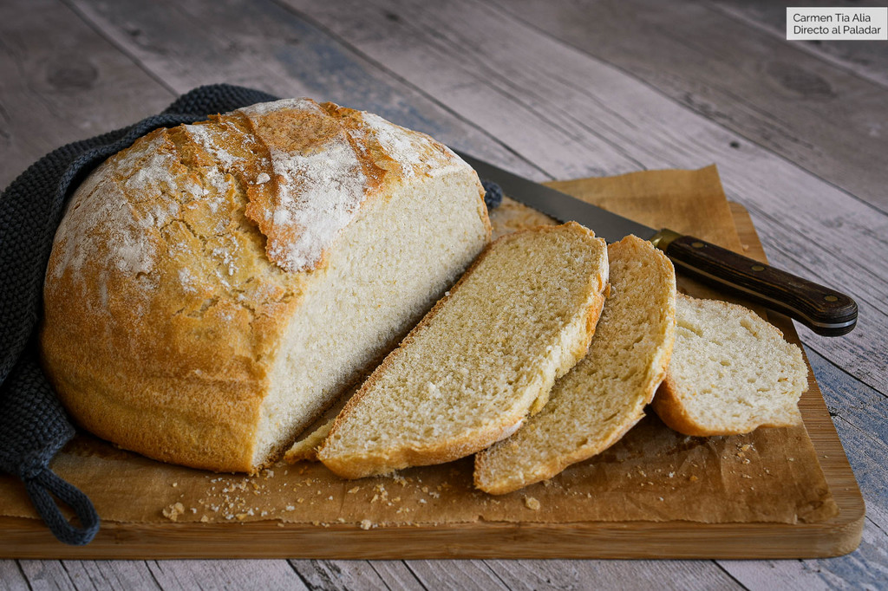
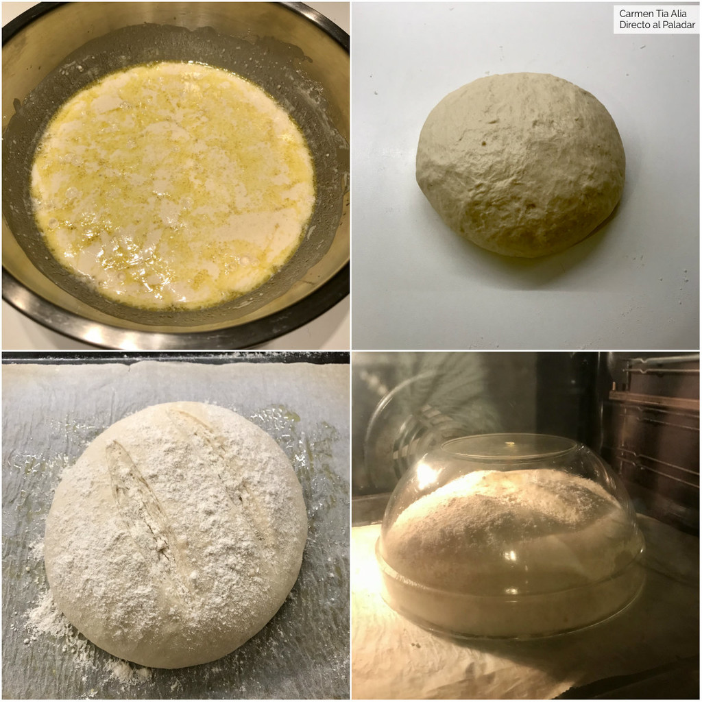

Pancito casero del recuerdo
El amor por la cocina lo heredé de mi madre y hoy se los comparto con esta receta...

- Harina de trigo 500gs
- Agua tempada 325 ml
- Levadura fresca 15 gs
- Sal 10 gs
- Azucar 10 gs
- Aceite de oliva extra virgen 45 gs
Ingredientes
Preparacion
Poner la harina en un recipiente hondo y hacer un hueco en el centrocolocar la levadura y el azucar en el centro y mezclar
echar la mitad del agua tibia y luego el aceite integrando de a poco

unir todo y amasar hasta que se forme un bollo liso y dejar reposar en un lugar calido hasta que doble su volumen Pasado este tiempo, aplastar la masa para desgacificar y hacer un bollo
Colocar en una asadera, untarlo con un poco de aceite de oliva, hacer unos cortes en forma de cruz
y llevarlo a un horno precalentado a 200 °C por 45 minutos
Retirar cuando este dorado y dejar enfriar